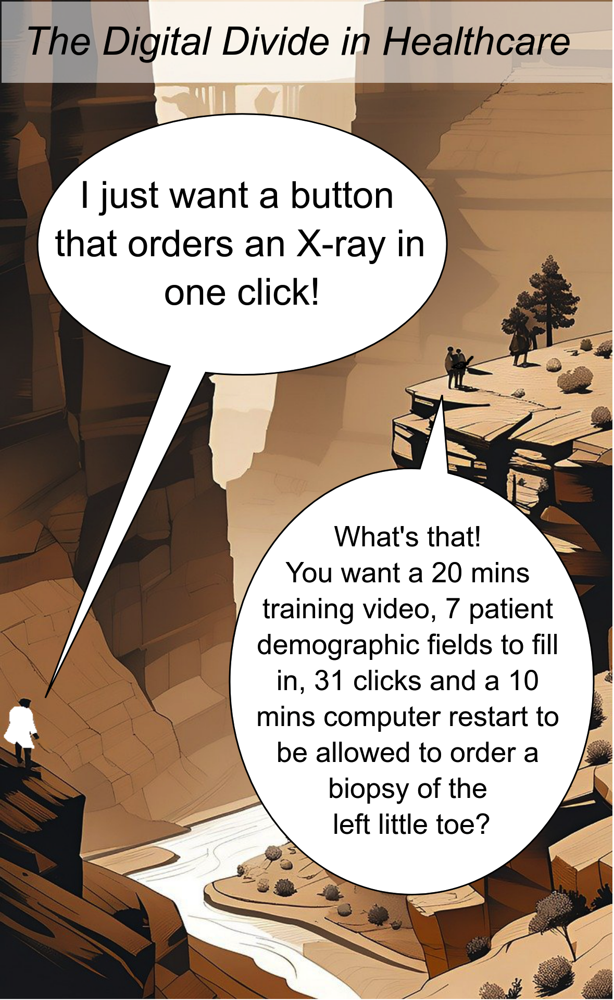

Let’s Do Digital
Learn
Conference
Tickets
Posts
Services we offer
Who are we
Categories
All
(19)
Careers
(1)
Conference
(4)
Education
(1)
Future plans
(1)
Pilot
(1)
Quarterly meeting
(1)
Webinar
(1)
blog
(8)
update
(1)
Posts
Time to deliver, top ten topics
blog
The results are in
Mark Bailey
Aug 1, 2024
When the antivirus becomes the virus
blog
And how we should manage digital health deployment
Mark Bailey
Jul 19, 2024
Topics for the first 10 Essentials of Health Informatics Webinars
blog
You need to start somewhere
Mark Bailey
Jul 2, 2024
Handbook of Clinical Informatics
blog
The best way to eat an elephant is one bite at a time!
Mark Bailey
Jun 6, 2024
Better Than Nothing: developing a resource to support patient care with no time, resource or money
blog
An Integrated Care Board Story
Nadia Kuftinoff
Jun 5, 2024
Student Editor Role - Let’s Do Digital
update
Be part of clinical informatics education
Mark Bailey
May 14, 2024
Games, cheatsheets and the NHS
blog
Because play is a form of learning
Simon Latimer
May 7, 2024

Why ask a Clinician?
blog
Why teach others clinical?
Mark Bailey
Apr 17, 2024
Why a coding course and why now?
blog
It is a question of community
Mark Bailey
Apr 10, 2024
2023 conference is all done, but more to come
Conference
Another successful Let’s Talk Digital Conference
Mark Bailey
Jul 12, 2023
ChatGPT Kubernete
Conference
LLM gives a great response
Mark Bailey
May 5, 2023
Let’s talk digital conference 2023 fast approaching
Conference
Conference update
Mark Bailey
May 5, 2023
Let’s talk about careers in clinical informatics and white swans
Careers
Pubs and career advice
Mark Bailey
Dec 5, 2022
Let’s talk digital 2023 conference 15th of June
Conference
Conference update
Mark Bailey
Oct 10, 2022
Msc in health tech underway
Education
Education
Mark Bailey
Sep 16, 2022
2nd quarterly meeting 21/10/22 11am
Webinar
Quarterly meeting
Mark Bailey
Sep 5, 2022
Spiritum Duo - Let’s Do Digital pilot
Pilot
Pilot of Spiritum Duo
Mark Bailey
Jul 21, 2022
Let’s Do Digital - the start of a new beginning
Future plans
Future plans
Mark Bailey
Jul 19, 2022
First Let’s Do Digital Quarterly meeting - 15/07/2022
Quarterly meeting
Quarterly meeting
Mark Bailey
Jul 15, 2022
No matching items